← Index · ← Previous · Next →
Authors: Simone Zanotti, Marco Liscidini, Dario Gerace, Lucio C. Andreani
Type: theory · Category: other · PDF: https://arxiv.org/pdf/2608.30691v1
Analysis basis: full PDF text, analyzed in chunks
Topic relevance: correlated / nonlocal dissipation 3/5 · driven-dissipative phase transition 3/5 · interference shaping light 3/5 · methods for driven-dissipative 3/5 · Keldysh / 2PI / non-Gaussian methods 2/5 · Tavis-Cummings & cavity-many-emitter 2/5 · analog quantum simulation 2/5 · non-equilibrium universality 1/5 · quantum measurements 1/5
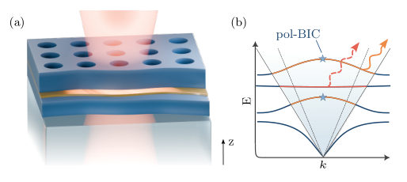
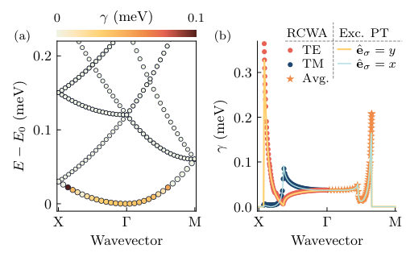
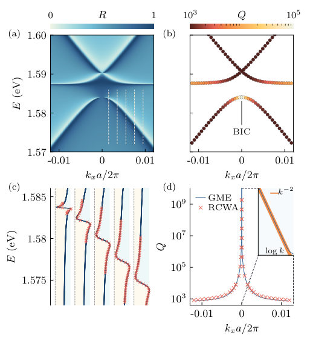
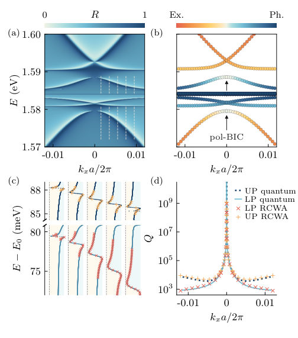
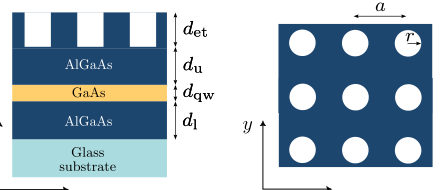
Summary. This paper develops a generalized Hopfield formalism to model exciton-polaritons in patterned photonic crystals, specifically addressing the challenge of intrinsic excitonic radiative decay. The authors prove that the formalism correctly predicts the existence of polariton Bound States in the Continuum (BICs) by incorporating momentum-dependent losses. This establishes a unified theoretical tool for designing advanced photonic platforms coupled to 2D quantum materials.
Why it may be interesting. This work provides a powerful, unified, and microscopic theoretical framework for analyzing light-matter interactions in structured materials, which is highly relevant to quantum optics and open quantum systems.
Main problem. The core problem is determining if the non-Hermitian Hopfield formalism can consistently describe polariton Bound States in the Continuum (BICs) when the constituent 2D excitons possess intrinsic, wavevector-dependent radiative decay.
Main result. The authors show that the generalized Hopfield formalism correctly captures the existence of genuine k=0 polariton BICs, even with intrinsic excitonic losses, by unifying the description of radiative excitons and polariton BICs.
Method. The study employs a quantum mechanical approach by diagonalizing a non-Hermitian Hopfield matrix, which is extended to incorporate the wavevector-dependent radiative decay rate of 2D excitons derived via time-dependent perturbation theory.
Model / system. The system models exciton-polaritons formed by strong light-matter coupling between photonic modes in patterned planar waveguides (Photonic Crystal slabs) and 2D optically active excitations (like those in quantum wells or TMDs).
Key observables. Polariton dispersion, BIC quality factor (Q), excitonic fraction, and the radiative linewidth ($\Gamma$) of the excitons.
Important parameters / regimes. Lattice period (a = 250 nm), resonance energy (E_exc = 1.584 eV), and the coupling strength derived from the Hopfield matrix elements.
Assumptions / limitations. The primary advancement is deriving the wavevector-dependent excitonic radiative decay rate from first principles, moving beyond purely phenomenological loss terms.
Figures summary. Figures illustrate the system geometry (QW in a patterned PC slab), the free exciton dispersion alongside calculated radiative losses, and the final polariton dispersion curves confirming the BIC existence.
Paper structure. The paper develops the generalized Hopfield formalism by incorporating intrinsic excitonic losses, benchmarks this theory against rigorous methods like RCWA, and finally demonstrates the existence and nature of the polariton BICs in the coupled system.
Bound states in the continuum (BICs) enable optical modes with ideally infinite radiative lifetimes despite lying within the radiation continuum. Radiation-matter interaction in periodically patterned planar waveguides embedding two-dimensional (2D) optically active excitations can be described quantum mechanically by diagonalizing a non-Hermitian operator, known as the Hopfield matrix, which can be generalized to incorporate independent photonic and excitonic losses into the polaritonic states. However, since 2D excitons undergo intrinsic wavevector-dependent radiative decay within the light cone, whether the Hopfield formalism can consistently account for this process while preserving polariton BICs has remained an open question. Here we show that a non-Hermitian Hopfield formalism incorporating excitonic radiative losses correctly captures the existence of genuine $k=0$ polariton BICs with diverging radiative lifetimes. The theory provides a unified microscopic framework for radiative excitons and polariton BICs, and an efficient predictive tool for designing photonic-crystal platforms coupled to quantum wells, transition-metal dichalcogenides, and other 2D excitonic materials.
Authors: Jinghan Gao, Shruti Mishra, Yilin Kou, S M Enamul Hoque Yousuf, Hanna Cho, Roozbeh Tabrizian
Type: both · Category: other · PDF: https://arxiv.org/pdf/2608.28956v1
Analysis basis: full PDF text, analyzed in chunks
Topic relevance: analog quantum simulation 3/5 · driven-dissipative phase transition 3/5 · interference shaping light 2/5 · methods for driven-dissipative 2/5 · non-equilibrium universality 2/5 · quantum optics experiment 2/5 · Frenkel-Kontorova 1/5 · Keldysh / 2PI / non-Gaussian methods 1/5 · correlated / nonlocal dissipation 1/5 · quantum measurements 1/5
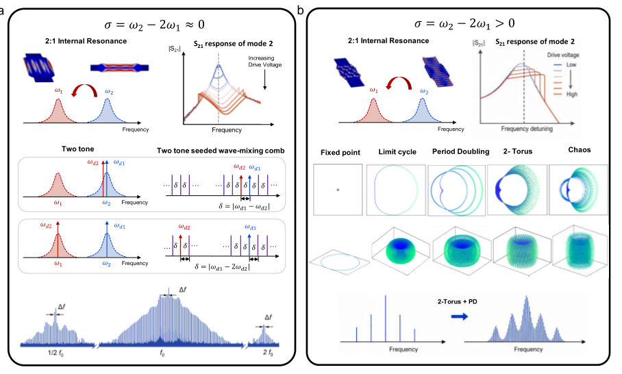
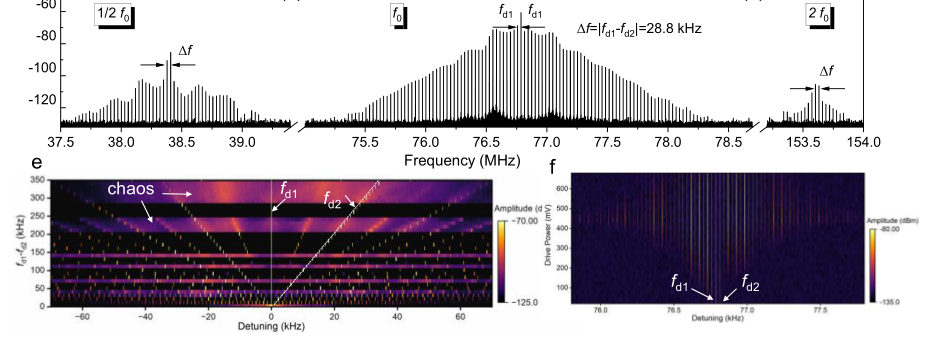
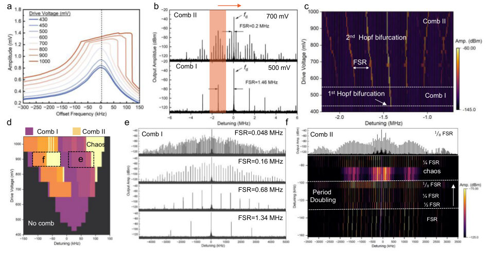
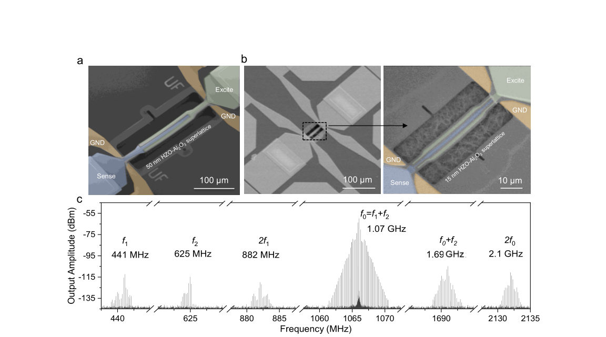
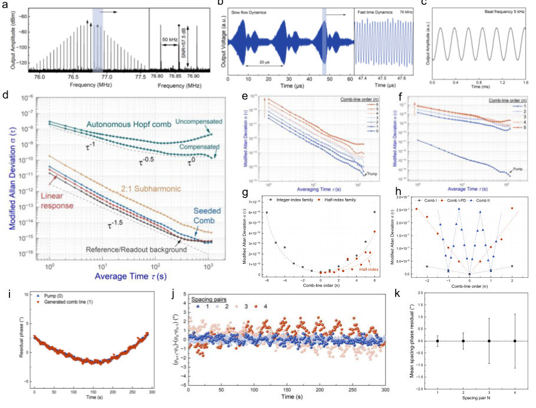
Summary. This work reports the creation of broadband, coherent frequency combs using nanoelectromechanical resonators made from ferroelectric CMOS oxides. By controlling the internal resonance mismatch, the authors demonstrate two distinct generation pathways—seeded and autonomous—that allow for the creation of a highly stable, chip-scale frequency source for advanced electronics.
Why it may be interesting. While the focus is on classical RF electronics, the underlying physics—nonlinear coupled oscillators exhibiting bifurcations (Hopf) and energy transfer—is highly relevant to open quantum systems and cavity QED studies involving parametric interactions.
Main problem. Modern electronics require multiple, mutually coherent clock and carrier frequencies from a single source, which is a major scaling challenge compared to current PLL-based architectures.
Main result. The authors demonstrated broadband, dense, and mutually phase-coherent phononic frequency combs in ferroelectric CMOS oxides, establishing a single resonator as a chip-scale frequency infrastructure.
Method. The study combines nonlinear dynamics modeling (slow-flow analysis, bifurcation theory) with electrical characterization (VNA, heterodyne measurements) to control comb generation.
Model / system. The physical platform is a nanoelectromechanical resonator built from ferroelectric hafnium-zirconium oxide (HZO) CMOS oxides. The system's nonlinearity is leveraged via lithographically defined detuning to select between seeded (two-tone-seeded) or autonomous (Hopf bifurcation) comb generation mechanisms.
Key observables. Number of comb lines (>170 to >200), mutual coherence, short-term stability (white-phase-noise scaling vs. phase diffusion), and temperature coefficient of frequency (TCF).
Important parameters / regimes. Internal resonance mismatch ($\sigma_i$), operating frequency range (0.44 GHz to 2.1 GHz), and the two-timescale law governing stability.
Assumptions / limitations. The analysis relies on reduced-order models (ROM) and slow-flow approximations, and stability measurements were performed in air without active thermal control.
Figures summary. Figures likely show the M-shaped saturation response for near-commensurate pairs and the hardening-like resonance curve for finite mismatches, illustrating the control over the generation mechanism.
Paper structure. The paper establishes the need for RF frequency combs, details the HZO CMOS platform's advantages, models two distinct generation pathways (seeded vs. autonomous) using nonlinear dynamics, and quantifies the resulting stability and programmability.
Modern electronic systems require tens of clock and carrier frequencies, each synthesized by a dedicated phase-locked loop from a shared reference, imposing routing, power and synchronization burdens that grow with every domain. Optical frequency combs solved this problem in photonics, whereas electronics has lacked an equivalent source in its native radiofrequency domain. Here we report broadband phononic frequency combs in ferroelectric hafnia-zirconia nanoelectromechanical resonators built from complementary metal-oxide-semiconductor (CMOS) oxides. Lithographically defined detuning of a 2:1 internal resonance selects the generation mechanism: two-tone-seeded wave mixing yields more than 170 lines distributed over two octaves, with mutual coherence verified for representative pump and generated lines, whereas an autonomous Hopf route yields hierarchical combs of more than 200 lines through torus and period-doubling dynamics, in agreement with slow-flow bifurcation theory. Geometric scaling extends comb generation across 0.44 GHz to 2.1 GHz. Heterodyne measurements, analyzed using the modified Allan deviation (MDEV), establish a two-timescale law. The mechanism governs short-term stability: seeded combs inherit the white-phase-noise scaling of their pumps, whereas autonomous combs acquire the phase diffusion of a free-running oscillator, with the one-second MDEV increasing from 1e-11 to 1e-8. The material governs long-term stability: in air and without active thermal control, the temperature-compensated stack suppresses the random-walk drift that dominates uncompensated resonators. These results establish mechanism- and material-level design rules for operating a single resonator as chip-scale frequency infrastructure, from multi-clock generation to radiofrequency parallel processing.
Authors: Helena Janowska, Wojciech Charaszkiewicz, Maja Wasiluk, Markus Peil, Teemu Taskinen, Joonas Hilska, Abhiroop Chellu, Teemu Hakkarainen, Anna Musiał
Type: experiment · Category: other · PDF: https://arxiv.org/pdf/2608.30547v1
Analysis basis: full PDF text, analyzed in chunks
Topic relevance: interference shaping light 3/5 · quantum optics experiment 2/5
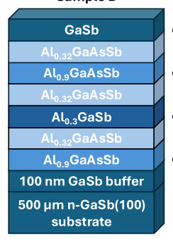
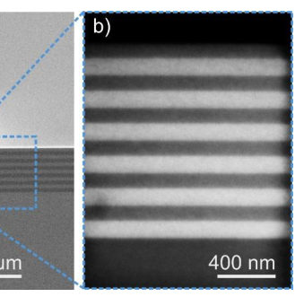
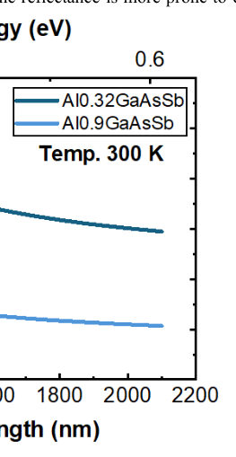
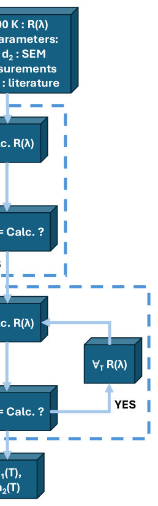
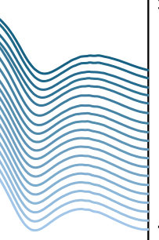
Summary. This research determined the temperature dependence of the refractive index for AlAsGaSb alloys by measuring reflectivity spectra from 11.5 K to 300 K. Using the Transfer Matrix Method, the authors extracted these temperature-dependent optical constants. This data is crucial for accurately designing high-performance Distributed Bragg Reflectors for quantum photonics applications operating at cryogenic temperatures.
Why it may be interesting. This work is highly relevant to quantum optics and photonics, as precise knowledge of material dispersion and temperature effects is critical for designing stable photonic circuits and cavities used in quantum information processing.
Main problem. The primary goal is to accurately determine the temperature dependence of the refractive index for AlAsGaSb alloys.
Main result. The study successfully extracted temperature-dependent refractive indices for two different AlGaAsSb alloys, providing essential data for reliable DBR design under cryogenic conditions.
Method. Reflectivity spectra were measured across a wide temperature range (11.5 K to 300 K) and fitted using the Transfer Matrix Method (TMM) combined with a recursive numerical fitting algorithm.
Model / system. The system involves photonic multilayer structures, specifically Distributed Bragg Reflectors (DBRs), composed of AlAsGaSb alloys lattice-matched to GaSb, designed for operation in the telecom C-band (around 1.5 $\mu$m).
Key observables. Temperature-dependent refractive indices ($n$), and normalized reflectivity spectra.
Important parameters / regimes. Temperature range: 11.5 K to 300 K; Wavelength: 1500 nm to 1550 nm; Alloys: $ ext{Al}{0.9} ext{Ga}} ext{As{0.06} ext{Sb}}$ and $ ext{Al{0.32} ext{Ga}} ext{As{0.02} ext{Sb}$.
Assumptions / limitations. The analysis assumes the reflectance of a gold mirror reference is constant, and the thermal expansion of the materials is negligible.
Figures summary. Figures show the DBR sample schemes, SEM cross-sections, and the measured/fitted normalized reflectivity spectra at various temperatures (e.g., 12 K and 295.3 K).
Paper structure. The paper describes the necessity of temperature-dependent optical constants for DBR design, details the measurement process across multiple temperature points, and presents the fitting methodology using TMM to extract the temperature dependence of the refractive index.
Accurate design and optimization of photonic multilayer structures like distributed Bragg reflectors (DBRs) require precise knowledge of material optical constants, particularly the temperature dependence of the refractive index. While these parameters are well established for widely used semiconductors, for emerging materials such as antimonides they are often limited to room-temperature data, especially for new spectral ranges of interest. Antimonide compounds, in particular GaSb-based alloys, are promising for quantum photonics applications. In this work, we investigated DBRs lattice-matched to GaSb and designed for operation in the third telecommunication window. Reflectivity spectra were measured in the temperature range from 11.5 K to 300 K, and then fitted using the transfer matrix method (TMM), combined with a dedicated recursive numerical fitting algorithm. Initial parameters included layer thicknesses determined by scanning electron microscopy (SEM) and literature values of refractive indices at room temperature. This approach enabled extraction of the temperature-dependent refractive indices of two AlGaAsSb alloys suitable for forming DBR mirrors for 1.5 um wavelengths. The obtained results provide essential input for reliable DBR design, ensuring proper stopband positioning and high reflectivity under cryogenic operating conditions required for efficient quantum emitter performance.
Authors: L. L. Lage, A. Latgé
Type: theory · Category: other · PDF: https://arxiv.org/pdf/2608.30007v1
Analysis basis: full PDF text, analyzed in chunks
Topic relevance: analog quantum simulation 3/5 · Frenkel-Kontorova 1/5
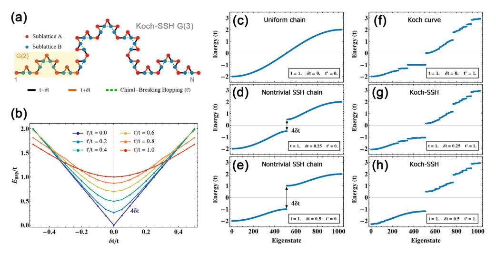
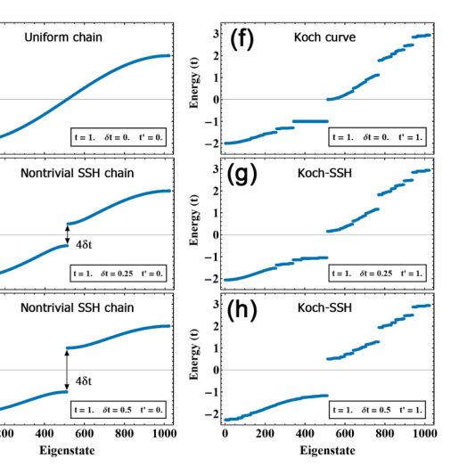
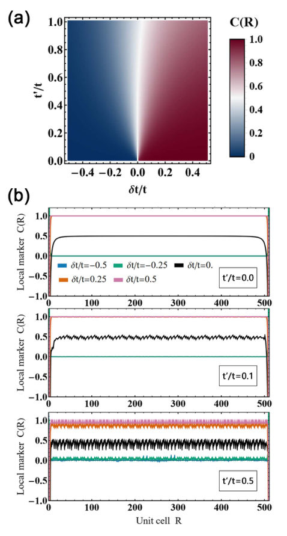
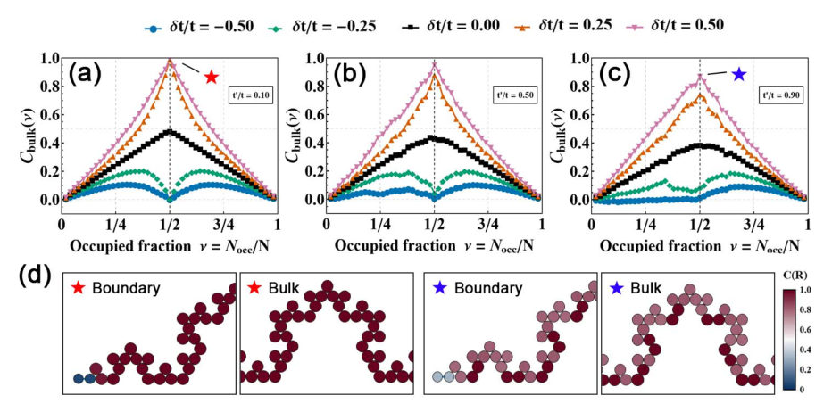
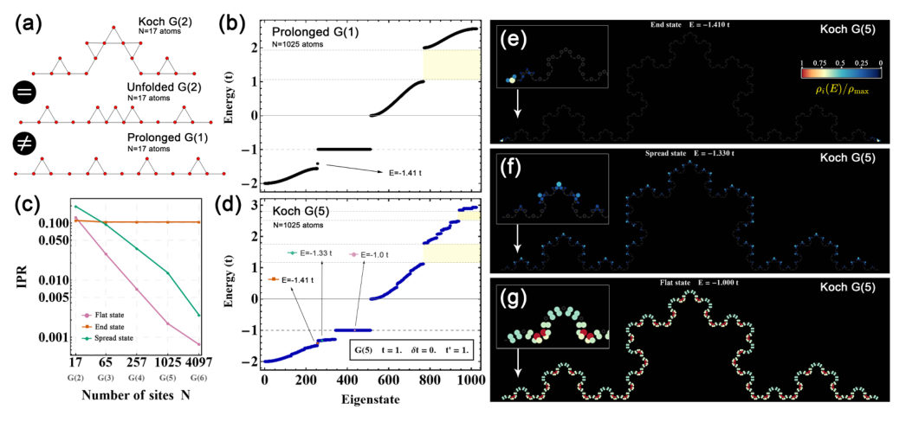
Summary. This work examines the electronic structure of the SSH model placed on a Koch fractal lattice. By introducing local triangular hoppings, the model develops a degenerate flat band, while the global fractal connectivity of the Koch curve systematically reduces this degeneracy. The findings highlight a crucial interplay between local geometric features and global fractal structure in determining quantum electronic properties.
Why it may be interesting. The combination of fractal geometry, topological models (SSH), and symmetry breaking provides a rich platform for studying how geometric constraints dictate fundamental quantum properties like localization and spectral structure.
Main problem. The paper investigates how coupling the Su-Schrieffer-Heeger (SSH) model to the geometry of the Koch fractal modifies its topological properties and electronic spectrum.
Main result. The local triangular geometry creates a highly degenerate flat band at E=-t, but the global fractal connectivity of the Koch curve reduces this degeneracy and alters the spectral weight compared to a simple extended chain.
Method. The study uses a real-space formulation of the Hamiltonian, analyzing spectral properties, topological markers, and localization via the Inverse Participation Ratio (IPR).
Model / system. The system is the SSH model constructed on the Koch curve, incorporating additional intra-sublattice hopping terms (t') that break chiral symmetry. The Hamiltonian is analyzed by comparing its behavior to the standard SSH chain.
Key observables. Spectral gaps (E_gap), degeneracy of the flat level at E=-t, local topological marker C(R), and the Inverse Participation Ratio (IPR).
Important parameters / regimes. Dimerization parameter (delta t/t) and the chiral-breaking hopping parameter (t'/t).
Assumptions / limitations. Periodic boundary conditions are imposed for bulk-like behavior, and the analysis separates local (triangular) and global (fractal) effects.
Figures summary. Figures illustrate the energy gap dependence on dimerization and chiral-breaking terms, and show the evolution of the degeneracy of the flat band at E=-t for prolonged versus Koch structures.
Paper structure. The paper systematically analyzes the Hamiltonian, first establishing the role of local triangular hoppings in creating flat bands, then analyzing how the global Koch hierarchy modifies the degeneracy of these states, and finally examining the impact of chiral symmetry breaking.
Fractal geometries provide a distinctive platform for controlling quantum interference, topology, and localization. We investigate the Su--Schrieffer--Heeger (SSH) model constructed on the Koch curve, where a triangular geometry enables additional same-sublattice hoppings that break chiral symmetry and modify the conventional topological behavior captured by a real-space local marker. Destructive interference within the triangular units produces a highly degenerate flat level at $E=-t$. Although this level originates from the local geometry, its degeneracy and spectral weight are controlled by the self-similar connectivity of the Koch curve. The hierarchy reduces the number of independent flat states and reorganizes the spectrum into an intricate distribution of energy levels. Our results reveal complementary roles for local triangular interference and global fractal connectivity in shaping the electronic properties of geometrically modified SSH chains.
Authors: Viet Hung Ho, Ge Li, Melisa M. Gianetti, Bjørn Haugen, Graham L. W. Cross, Astrid S. de Wijn
Type: theory · Category: other · PDF: https://arxiv.org/pdf/2608.29141v1
Analysis basis: full PDF text, analyzed in chunks
Topic relevance: Frenkel-Kontorova 3/5 · analog quantum simulation 1/5
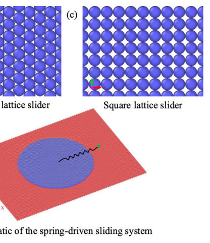
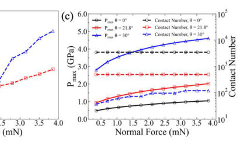
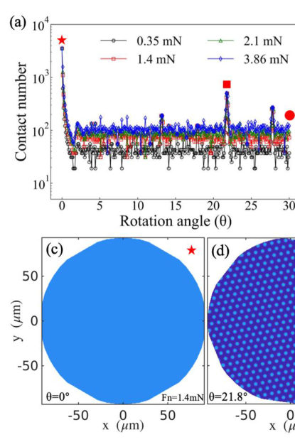
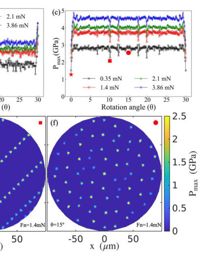
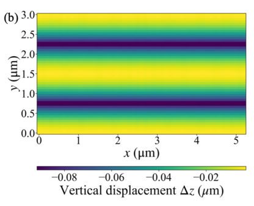
Summary. This work investigates how to maintain structural superlubricity—a state of near-zero friction—in patterned materials under high loads. The authors find that simple incommensurate patterns fail because they concentrate stress, causing coating failure. They propose and validate that a specific square-triangular pattern, which introduces directional commensurability, successfully stabilizes superlubricity by distributing the load effectively.
Why it may be interesting. While the physics is classical tribology, the concept of stabilizing a desired low-energy state (superlubricity) against external perturbations (high load, defects) through engineered periodicity echoes concepts of robustness in quantum systems.
Main problem. The primary challenge is stabilizing structural superlubricity in patterned mesoscale interfaces under high mechanical loads, as simple incommensurate patterns fail due to localized coating pressure exceeding material strength.
Main result. The authors demonstrate that using a square-triangular patterned interface, which creates directional commensurability, stabilizes superlubricity at high loads by distributing contact loads and preventing coating failure.
Method. The study uses molecular dynamics simulations (LAMMPS) to model the interaction between patterned surfaces, employing Hertz-Mindlin contact mechanics.
Model / system. The system involves patterned mesoscale interfaces (e.g., triangular-triangular or square-triangular) coated with a superlubric layer, modeled as deformable elastic spheres interacting under normal loads.
Key observables. Friction force/coefficient, maximum interfacial pressure ($P_{ ext{max}}$), total number of load-bearing contacts, and structural stability.
Important parameters / regimes. Critical coating failure pressure ($P_{crit} = 4 ext{ GPa}$), relative orientation angles ($ heta$), and sliding direction angles ($\alpha$).
Assumptions / limitations. The analysis assumes that superlubricity is lost when the local maximum contact pressure exceeds the critical coating failure threshold ($P_{crit}$).
Figures summary. Figures compare the frictional response and maximum pressure for tri-tri vs. square-tri models under varying loads and orientations, highlighting the superior performance of the square-tri model.
Paper structure. The paper progresses by first showing the failure of simple incommensurate patterns (tri-tri) at high loads, then proposing and simulating the square-tri pattern, demonstrating that directional commensurability stabilizes superlubricity, and finally testing the robustness against defects and material softness.
Structural superlubricity, arising from lattice incommensurability, offers a promising route to eliminate friction and associated energy losses in mechanical systems. In real-world systems, roughness and wear currently pose severe limitations on its robustness and especially the contact size. Here, we consider patterned surfaces as a possible route to overcome some of these limitations. We show that the simplest choice of patterning, contacts made up of two incommensurate triangular-triangular patterns, fails at elevated loads because of the small number of load-bearing contacts, causing the maximum local contact pressure to exceed the strength of the superlubric coating. We introduce a square-triangular patterned interface that increases the number of load-bearing contacts and organizes them into continuous contact lines. When sliding along specific directions relative to these lines, superlubricity is maintained at significantly higher loads by reducing pressure-induced coating failure while also remaining somewhat tolerant to surface imperfections. These findings establish a mechanism for stabilizing structural superlubricity against coating failure and a design principle for engineering low-friction interfaces with enhanced load-bearing capacity and defect tolerance.
Authors: Yue Mao, Yu-Chen Zhuang, Cheng-Ming Miao, Yu-Fei Sun, Qing-Feng Sun
Type: theory · Category: other · PDF: https://arxiv.org/pdf/2608.29861v1
Analysis basis: full PDF text, analyzed in chunks
Topic relevance: analog quantum simulation 3/5 · Keldysh / 2PI / non-Gaussian methods 1/5
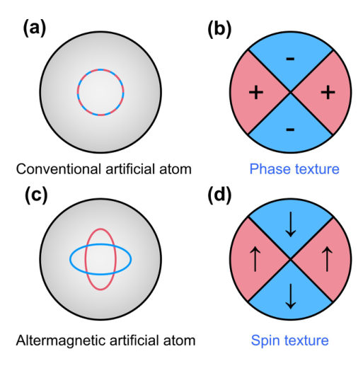
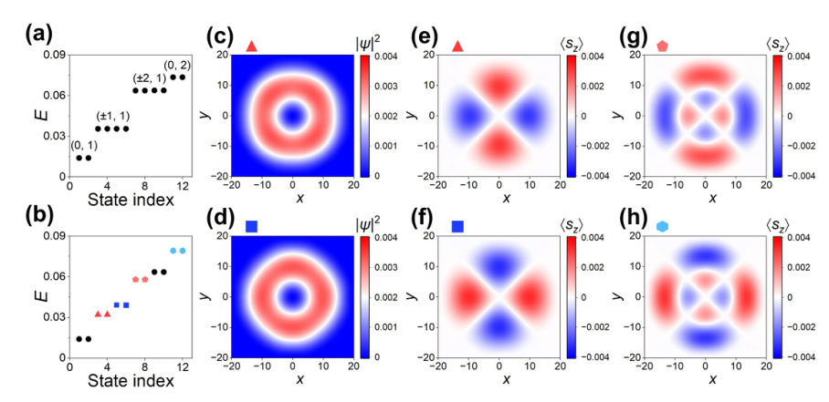
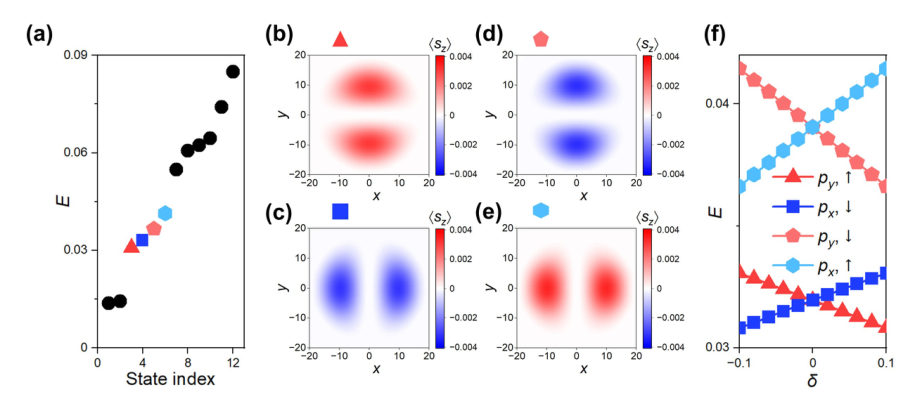
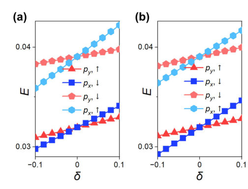
Summary. This paper introduces altermagnetic artificial atoms, showing that the inherent spin-splitting mechanism reconstructs conventional orbitals into spin-textured states. These textures encode spin information spatially, and the authors demonstrate that applying external strain allows for the continuous, tunable control of the orbital energy degeneracy. This establishes a powerful route for engineering spin-dependent quantum properties in confined matter.
Why it may be interesting. This work directly addresses engineering spin-dependent orbital structures in quantum-confined systems, which is highly relevant for realizing novel quantum devices and understanding spin-orbit coupling effects in artificial lattices.
Main problem. To determine if altermagnetism can encode spin into the orbital degrees of freedom of artificial atoms, moving beyond conventional systems where spin is passive.
Main result. Altermagnetism generates spin-textured orbitals with spatially distinct opposite spin components, and external strain can continuously tune the energy splitting of these degenerate orbital pairs.
Method. The study uses theoretical modeling, solving a continuum and discretized lattice Hamiltonian derived from the altermagnetic confinement potential.
Model / system. The system is altermagnetic artificial atoms, modeled by a Hamiltonian incorporating kinetic energy, a momentum-dependent spin splitting term ($t_J$), and a confining potential $V(r)$.
Key observables. Confined energy spectrum, local spin densities ($\langle s_z(\mathbf{r}) angle$), and the evolution of orbital degeneracy under strain.
Important parameters / regimes. Altermagnetic strength ($t_J$), confinement radius ($R$), and strain parameter ($\delta$).
Assumptions / limitations. The analysis relies on a representative low-energy Hamiltonian and assumes the hard-wall confinement potential is effectively realized.
Figures summary. Figures illustrate the transition from conventional spin-degenerate orbitals to spin-textured ones, showing the splitting of energy levels and the spatial distribution of spin polarization under strain.
Paper structure. The paper introduces the concept via a Hamiltonian, analyzes the resulting spin-textured orbitals, and then systematically investigates how external strain breaks the symmetry to tune the energy splitting of these states.
Artificial atoms provide a versatile platform for engineering atomic-like orbitals, yet spin generally remains a passive degree of freedom in their orbital structure. Here, we introduce the concept of altermagnetic artificial atoms formed by confining electrons with momentum-dependent spin splitting. We show that altermagnetism reconstructs conventional confined orbitals into spin-textured orbitals, with spatially distinct distributions of opposite spin components. The resulting confined spectrum retains a twofold degeneracy protected by the combined $C_{4z}\mathcal{T}$ symmetry. These spin textures persist in higher-energy states, where additional radial structures combine with the characteristic angular spin pattern. Furthermore, strain resolves the degenerate orbital pairs into spin-polarized states, and continuously tunes their energy splitting. Our results establish altermagnetic artificial atoms as a route to engineering spin-dependent orbital structures in quantum-confined systems.
Authors: Ashis Paul, Anuj P. Lara, Govind P. Agrawal, Samudra Roy
Type: theory · Category: other · PDF: https://arxiv.org/pdf/2608.30732v1
Analysis basis: full PDF text, analyzed in chunks
Topic relevance: interference shaping light 3/5
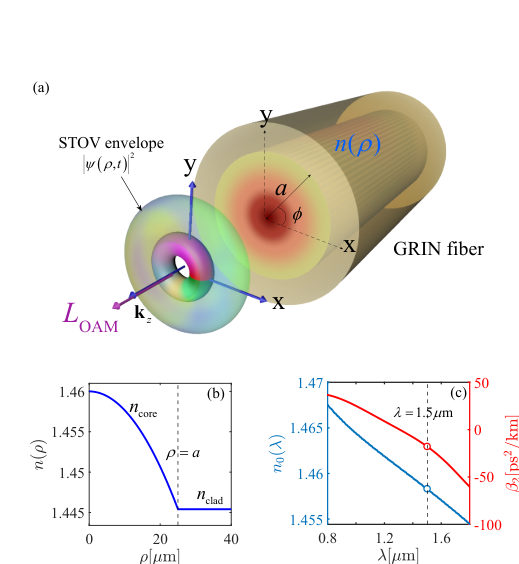
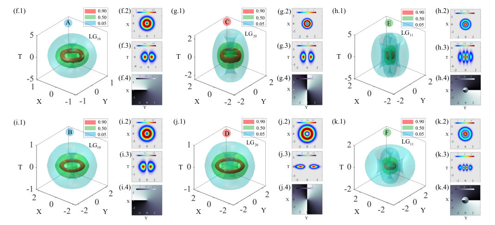
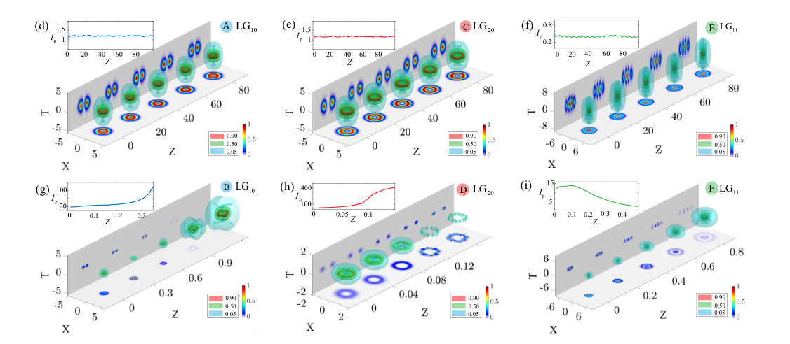
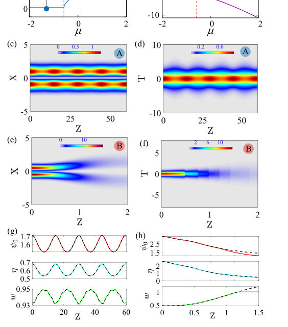
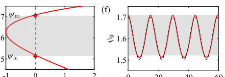
Summary. This paper theoretically analyzes the existence and stability of spatiotemporal vortex light bullets propagating in graded-index multimode fibers. By combining variational calculus with numerical methods, the authors prove the existence of a bistable family of these structured solitons. The findings suggest that these stable, high-order light structures have potential applications in classical and quantum information processing.
Why it may be interesting. This work is highly relevant to quantum optics and nonlinear wave physics, as it predicts stable, structured light states (vortex solitons) that could be utilized in advanced quantum information processing applications.
Main problem. The paper investigates the theoretical formation and evolution of spatiotemporal vortex light bullets (STOV bullets) within a graded-index multimode fiber.
Main result. The authors establish the existence of a bistable vortex soliton family, demonstrating that GRIN fibers can stabilize these structured light wave packets.
Method. A two-fold approach combining variational analysis with full numerical simulations was used to solve the nonlinear Schrödinger equation.
Model / system. The system models light propagation in a $ ext{GeO}_2$-doped silica GRIN fiber, governed by the (3+1)D Nonlinear Schrödinger Equation (NLSE). The vortex structure is characterized by an orbital angular momentum quantum number ($l$).
Key observables. Bistability, stability (via Vakhitov–Kolokolov criterion), and the spatiotemporal intensity profiles of the vortex bullets.
Important parameters / regimes. Topological charge ($l$), dimensionless GVD ($\delta^2$), nonlinear parameter ($\gamma$), and the fiber's refractive index profile parameters.
Assumptions / limitations. The analysis assumes radial symmetry ($\Psi( ho, T) = \psi( ho, T) \exp(il\phi + i\mu Z)$) and utilizes the variational method as an approximation.
Figures summary. Figure 1 schematically shows the STOV bullet, the refractive index profile, and dispersion characteristics. Figure 2 illustrates the spatio-temporal distributions and the energy dependence demonstrating bistability for different vortex modes.
Paper structure. The paper first sets up the physical model using the NLSE, then employs variational analysis to derive a reduced Lagrangian. This leads to finding closed-form solutions for the soliton parameters, demonstrating bistability, and finally analyzing the stability using the Vakhitov-Kolokolov criterion.
We explore theoretically the formation and evolution of spatiotemporal vortex bullets, pulses confined in both space and time while carrying orbital angular momentum, inside a graded-index multimode fiber. Through a two-fold approach, combining variational analysis with full numerical simulations, we establish the existence of a bistable vortex soliton family, characterized by distinct radial and azimuthal quantum numbers. These wave packets exhibit a Laguerre-Gaussian multi-ring topology in their spatiotemporal structure. We identify the experimental conditions necessary for the generation of such structured states of light. A stability analysis based on Vakhitov-Kolokolov criteria reveals an upper limit for the propagation constant, below which vortex bullets are found to be stable. Stationary and non-stationary dynamics of vortex bullets with different topological charges are analyzed fully, exploiting analytical techniques that are supported by full numerical simulations. These results enhance our understanding of self-trapped, spatiotemporal vortex solitons in a graded-index medium and may lead to potential applications in the area of classical and quantum information processing.
Authors: Narges Kia, Saeed H. Abedinpour, Zahra Faraei
Type: theory · Category: strongly correlated electrons · PDF: https://arxiv.org/pdf/2608.30010v1
Analysis basis: full PDF text, analyzed in chunks
Topic relevance: Keldysh / 2PI / non-Gaussian methods 3/5
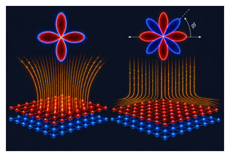
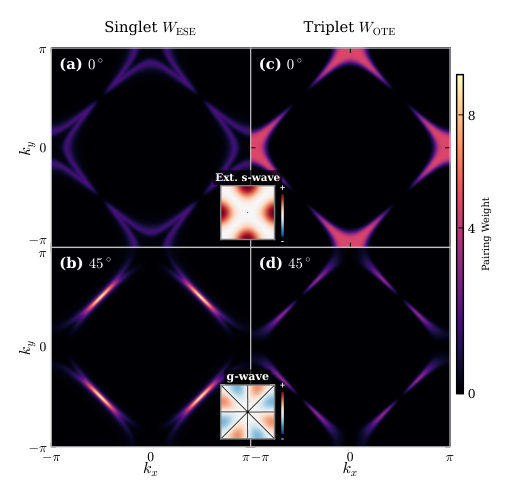
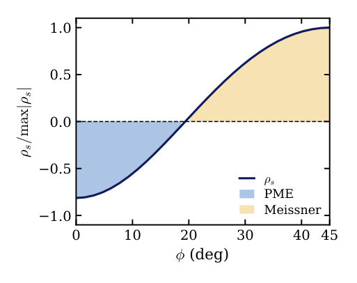
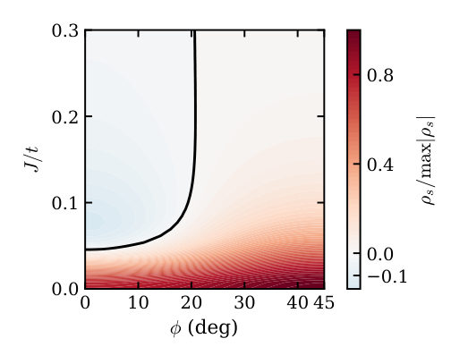
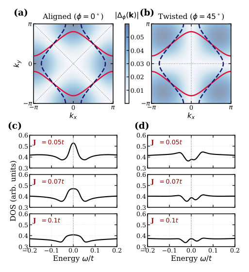
Summary. This theoretical work explores how twisting the interface between a $d$-wave superconductor and an altermagnet can control the superconducting state. By tuning the twist angle, the system can be switched between exhibiting a paramagnetic Meissner effect (PME) and a conventional diamagnetic response. This demonstrates a powerful, geometrically controlled platform for engineering odd-frequency pairing.
Why it may be interesting. The concept of using geometric/structural tuning (twist angle) to switch between fundamentally different macroscopic quantum states (paramagnetic vs. diamagnetic) is highly relevant for designing novel superconducting devices.
Main problem. The study aims to control quantum phenomena, specifically achieving and tuning paramagnetic superconductivity, by engineering the interface between a superconductor and a magnetic material.
Main result. The interfacial twist angle acts as a tunable knob, allowing the system to switch between a paramagnetic Meissner effect (PME) at alignment ($\phi=0$) and a conventional diamagnetic state at maximal twist ($\phi=\pi/4$).
Method. The investigation uses theoretical Green's function proximity formalism and linear response theory to calculate the total superfluid density ($ ho_s$).
Model / system. The system is a heterostructure combining a $d$-wave superconductor (SC) and a two-dimensional $d$-wave altermagnet (AM), whose coupling is modulated by a relative twist angle $\phi$.
Key observables. Total normalized superfluid density ($ ho_s(\phi)$), which determines the magnetic state ($ ho_s < 0$ for PME, $ ho_s > 0$ for diamagnetism).
Important parameters / regimes. The interfacial twist angle ($\phi$), the superconducting gap ($\Delta_d$), and the altermagnetic exchange coupling ($J$).
Assumptions / limitations. The analysis relies on the Nambu-Gor'kov formalism and linear response theory for calculating the electromagnetic response.
Figures summary. Figures illustrate the dependence of $ ho_s$ on $\phi$, showing the transition from paramagnetic ($ ho_s < 0$) to diamagnetic ($ ho_s > 0$) states, and show subgap resonances in the DOS corresponding to the PME phase.
Paper structure. The paper develops the theoretical framework by defining the proximity effect, calculating the anomalous pairing components (odd-frequency triplet pairing), and finally determining the macroscopic response ($ ho_s$) via the total current-current correlation kernel.
The interplay between twist-angle engineering and unconventional magnetism provides a powerful new route to control quantum phenomena. We theoretically investigate a heterostructure comprising a $d$-wave superconductor proximitized by a two-dimensional $d$-wave altermagnet. We reveal that the momentum-space mismatch between the superconducting gap nodes and the altermagnetic spin-splitting nodes generates a robust, twist-tunable odd-frequency spin-triplet pairing. Consequently, the macroscopic electromagnetic response of the system can be tuned from a conventional diamagnetic Meissner state to an anomalous paramagnetic Meissner effect driven entirely by the interfacial twist angle. For a $d_{x^2-y^2}$ altermagnet, the paramagnetic response is maximized at perfect alignment ($φ=0$) and completely suppressed at a maximal twist of $φ=π/4$, while a $d_{xy}$ altermagnet exhibits the exact complementary behavior. Our results establish twisted altermagnetic heterostructures as a versatile platform for engineering odd-frequency pairing and macroscopic superconducting phases.
Authors: Debashis Panda, Nicolas Périnet, Abdullah M. Abdal, Lyes Kahouadji, Seungwon Shin, Jalel Chergui, Damir Juric, Omar K. Matar, Laurette S. Tuckerman
Type: both · Category: other · PDF: https://arxiv.org/pdf/2608.31141v1
Analysis basis: full PDF text, analyzed in chunks
Topic relevance: analog quantum simulation 2/5 · driven-dissipative phase transition 2/5 · non-equilibrium universality 2/5 · Frenkel-Kontorova 1/5 · methods for driven-dissipative 1/5
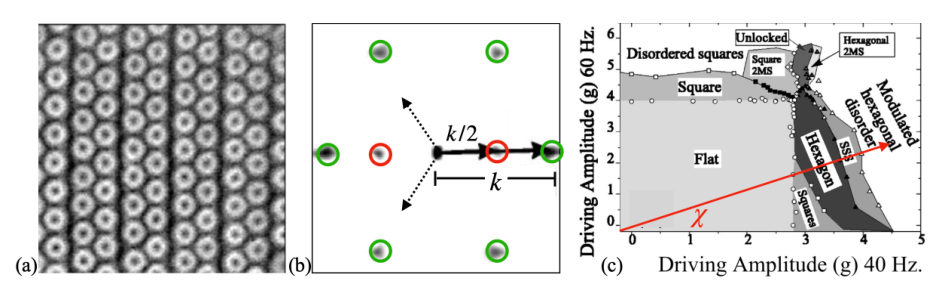
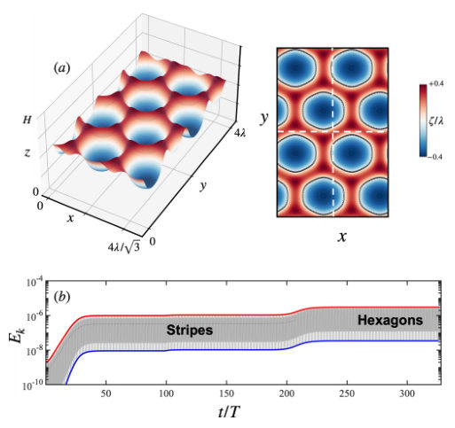
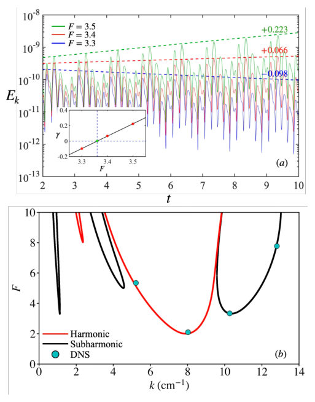
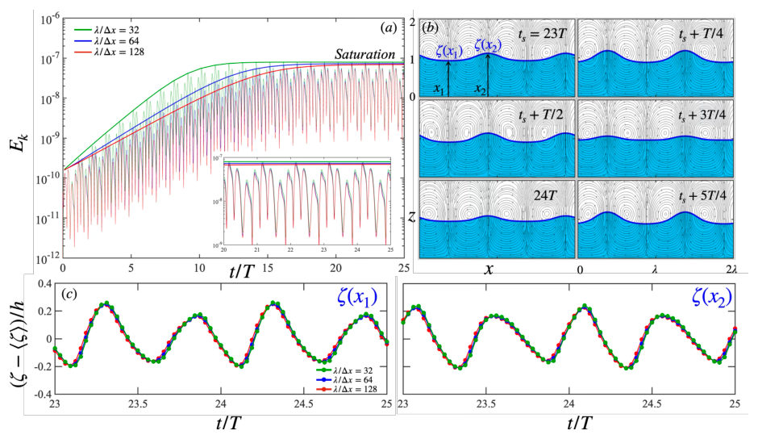
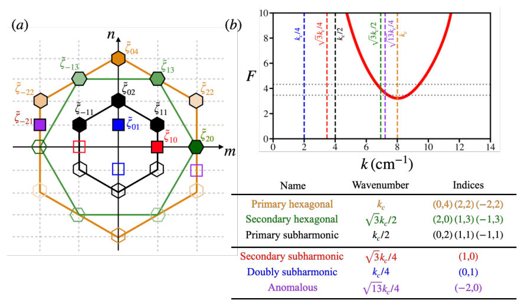
Summary. This paper uses advanced numerical simulations to study the complex formation of a superlattice pattern (SSS-I) in Faraday waves driven by two frequencies. The authors demonstrate that this pattern is highly robust, converging reliably even from different starting conditions. The work highlights the necessity of solving the full Navier-Stokes equations because simpler theoretical approximations fail in this highly nonlinear regime.
Why it may be interesting. While focused on fluid dynamics, the study of pattern formation, stability transitions, and the role of multiple interacting modes (like the subharmonic mode) shares mathematical parallels with pattern formation in nonlinear wave systems relevant to AMO physics or open quantum systems.
Main problem. The study investigates the formation and dynamics of a superlattice Faraday-wave pattern (SSS-I) driven by two distinct frequencies.
Main result. The SSS-I superlattice pattern is robustly formed, converging from different initial conditions, and can transition into a dynamic, drifting version while maintaining its basic structure.
Method. The research employs Direct Numerical Simulations (DNS) solving the full three-dimensional Navier-Stokes equations, supplemented by theoretical analysis of mode interactions and symmetry conditions.
Model / system. The physical system is a fluid layer subjected to two-frequency vertical oscillation (Faraday waves). The dynamics are modeled using the full 3D Navier-Stokes equations for a free surface interface.
Key observables. The superlattice pattern itself (patches connected by a 'backbone'), its spatial Fourier decomposition (hexagonal and subharmonic modes), and the temporal evolution of mode amplitudes.
Important parameters / regimes. Two-frequency forcing parameters ($\mathbf{F}$), forcing amplitude relative to onset ($25\%$ above), and simulation time (requiring $\sim 250$ forcing periods for convergence).
Assumptions / limitations. The simulations are performed in regimes where weak nonlinearity or viscosity approximations fail, necessitating the use of the full Navier-Stokes equations.
Figures summary. Figures illustrate the experimental SSS-I pattern, its spatial Fourier spectrum showing hexagonal and subharmonic modes, and diagrams detailing the computational domain setup and mode evolution.
Paper structure. The paper progresses from establishing the physical model and the necessity of full DNS, through demonstrating the convergence to the stable SSS-I state from multiple initial conditions, and concluding with analyses of pattern stability and symmetry breaking via mode analysis.
The formation of a superlattice pattern in two-frequency-driven Faraday waves discovered and named SSS-I by Arbell & Fineberg (1998, 2002) is investigated by means of Direct Numerical Simulations (DNS) of the full three-dimensional Navier--Stokes equations with a free surface. Two simulations with distinct quasi-hexagonal initial conditions run at a forcing amplitude $25\%$ above the Faraday-wave onset followed quite different routes, but both led eventually to the same superlattice pattern after around 250 forcing periods. This regime is inaccessible to the approximations of weak nonlinearity or viscosity. The standing-wave pattern contain rows of patches, alternating in time between hills and lakes that are connected by a long skeleton resembing the backbone of DNA strands. The patches and skeleton of the pattern can be related to its spatial Fourier decomposition, which combines hexagonal modes with a spatially and temporally subharmonic mode. One of the transition routes passes through several fairly long-lived transients including different hexagonal patterns and another superlattice pattern; the other passes only through erratic and disordered states. After another 100 periods, the pattern became unstable and was succeeded by a dynamic version of SSS-I in which the superlattice is modulated and drifts in the direction of the backbone, while preserving its basic shape. Convergence to SSS-I states both experimentally in a large geometry and numerically from two different initial conditions and in a minimal geometry demonstrates the robustness of the SSS-I pattern.
Authors: Seung Hwan Lee, Shaowen Chen, Andrew T. Pierce, Patrick R. Forrester, Kenji Watanabe, Takashi Taniguchi, Amir Yacoby
Type: experiment · Category: other · PDF: https://arxiv.org/pdf/2608.29015v1
Analysis basis: full PDF text, analyzed in chunks
Topic relevance: analog quantum simulation 2/5 · quantum measurements 2/5 · Keldysh / 2PI / non-Gaussian methods 1/5
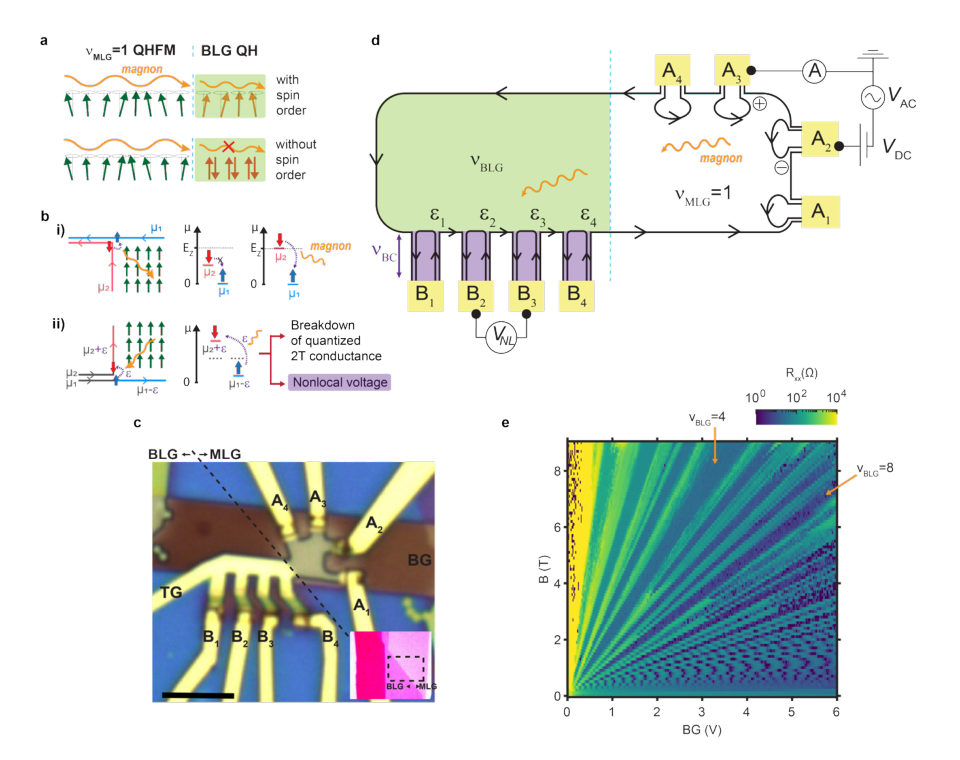
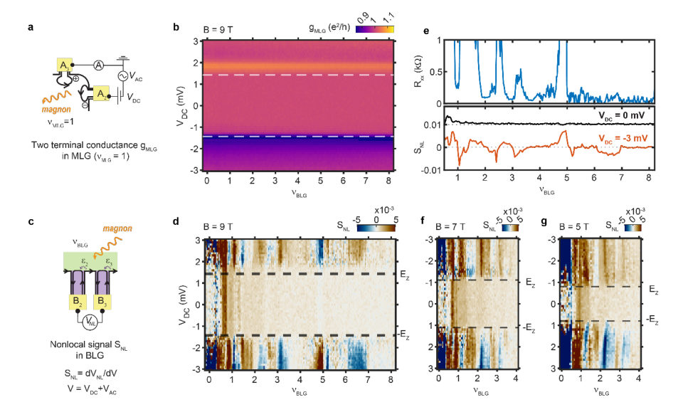
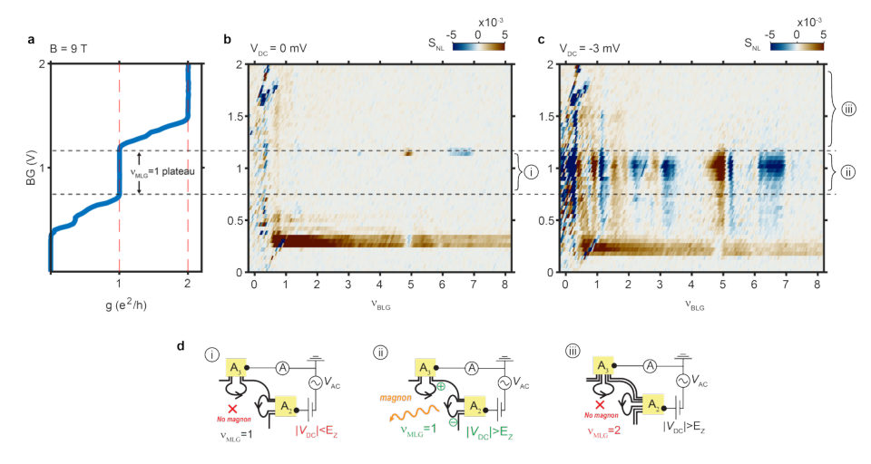
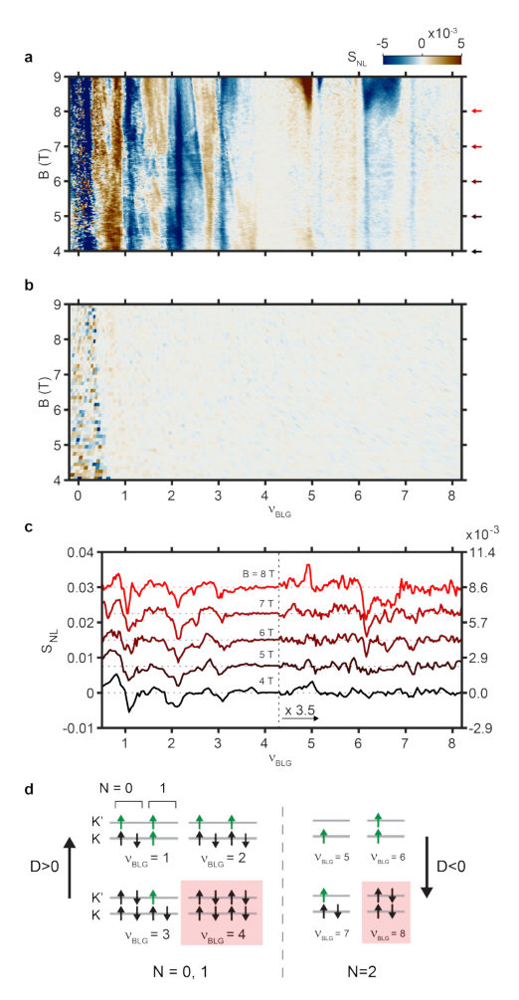
Summary. The authors report the first demonstration of magnon transmission across a quantum Hall ferromagnet heterojunction using MLG/BLG graphene. By generating magnons in the MLG source and detecting them nonlocally in the BLG target, they establish a powerful, all-electrical technique. This method successfully maps the magnetic order of the BLG quantum Hall states by observing characteristic signal features dependent on spin polarization.
Why it may be interesting. This work provides a novel, purely electrical spectroscopic tool to probe magnetic excitations (magnons) in correlated 2D electron systems, which is highly relevant for understanding emergent quantum phases in condensed matter.
Main problem. The challenge is to probe magnetic order in two-dimensional materials with dilute spin densities, where conventional magnetic probes are ineffective.
Main result. The study successfully demonstrates that magnon transmission across a graphene heterojunction (MLG/BLG) serves as a powerful, all-electrical method to map out the magnetic phase diagram of the target material.
Method. Nonlocal voltage measurements ($ ext{SNL}$) are used to detect magnons generated in a source material (MLG) and transmitted into a target material (BLG) across a heterojunction.
Model / system. The experiment utilizes a heterojunction between monolayer graphene (MLG) and bilayer graphene (BLG) operating in the Quantum Hall Ferromagnet (QHFM) regime. The mechanism relies on generating magnons via bias voltage exceeding the Zeeman energy in the source material.
Key observables. Nonlocal voltage signal ($ ext{SNL}$), two-terminal conductance ($g_{MLG}$), and the sharp onset of $ ext{SNL}$ at the Zeeman energy ($E_Z$).
Important parameters / regimes. Landau level filling factors ($ u_{MLG}, u_{BLG}$), perpendicular magnetic field ($B$), and applied DC bias voltage ($V_{DC}$).
Assumptions / limitations. The nonlocal signal is assumed to originate purely from magnon transmission, as charge leakage contributions are ruled out by analysis.
Figures summary. Figures illustrate the sharp onset of $ ext{SNL}$ at $E_Z$, the dependence of $ ext{SNL}$ on the filling factor $ u_{BLG}$ (showing suppression at $ u=4, 8$), and the confirmation that the signal requires magnon generation in the source material.
Paper structure. The paper establishes the physical necessity of the technique, details the measurement setup using MLG/BLG heterojunctions, demonstrates the magnon generation threshold via conductance measurements, and finally maps the magnetic order of the BLG state by observing the characteristic $ ext{SNL}$ features as a function of $ u_{BLG}$.
Two-dimensional material platforms now host a remarkable array of exotic correlated phases, from unconventional superconductivity to fractional Chern insulators. Probing magnetic order in these systems is essential for understanding their underlying physics, yet dilute spin densities render conventional magnetic probes ineffective. Spin waves, or magnons, in quantum Hall ferromagnets (QHFM) have proven effective for probing the magnetic order in various symmetry-broken quantum Hall (QH) phases in graphene systems, but previous works have been limited to homojunction configurations within a single material. Here, we demonstrate magnon transmission across a monolayer-bilayer graphene quantum Hall ferromagnet heterojunction - the first magnon transmission across quantum Hall ferromagnet heterojunctions, using one material as a magnon source to probe magnetic order in a distinct material. Generating magnons in monolayer graphene (MLG) at $ν$ = 1, we detect their transmission through bilayer graphene (BLG) via nonlocal voltage measurements, revealing spin order in BLG symmetry-broken quantum Hall states. The transmission exhibits hallmark magnon signatures: a sharp onset at the Zeeman energy and systematic variation with Landau level filling, including suppression at $ν$ = 4 and 8 where spin polarization vanishes. Our findings establish heterojunction magnon transmission as a powerful, modular probe of magnetic order, opening new avenues for investigating exotic quantum states across the rapidly expanding family of two-dimensional materials.
Authors: Guo-Hui Ding, Fei Ye, Bing Dong
Type: theory · Category: other · PDF: https://arxiv.org/pdf/2608.30306v1
Analysis basis: full PDF text, analyzed in chunks
Topic relevance: Keldysh / 2PI / non-Gaussian methods 2/5 · methods for driven-dissipative 2/5 · analog quantum simulation 1/5
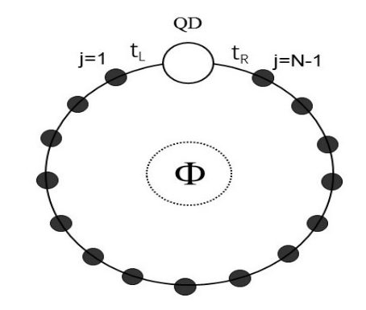
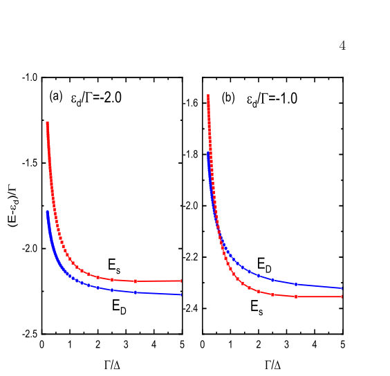
Summary. This theoretical work analyzes a superconducting ring coupled to a quantum dot, determining the system's ground state by comparing singlet and doublet energy configurations. The study reveals that the ground state undergoes a phase transition between singlet and doublet phases as the dot level is tuned. This transition is experimentally observable through abrupt jumps in the supercurrent as a function of magnetic flux.
Why it may be interesting. The interplay between superconducting proximity effects, localized impurity states (QD), and magnetic flux is central to mesoscopic physics, making this highly relevant for understanding superconducting quantum devices.
Main problem. The study investigates the ground state properties and supercurrent behavior in a superconducting ring containing a quantum dot, focusing on the singlet-doublet transitions.
Main result. The ground state switches between singlet and doublet phases depending on the quantum dot level ($\epsilon_d$), and the supercurrent exhibits abrupt jumps at these phase transition points.
Method. A variational wave-function approach is employed to treat the finite-U Anderson impurity coupled to the superconducting ring, minimizing the energy functional.
Model / system. The system consists of a superconducting ring (modeled by $H_{BCS}$) coupled to a quantum dot (QD, modeled by $H_{DOT}$) via a tunneling Hamiltonian ($H_T$). The Hamiltonian is analyzed using Bogoliubov transformations.
Key observables. Ground state energies ($E_S, E_D$), Josephson current ($I_J$), and QD occupation probabilities ($p_0, p_1, p_2$).
Important parameters / regimes. QD energy level ($\epsilon_d$), superconducting gap ($\Delta$), and external magnetic flux ($\Phi$ or $\phi_{ext}$).
Assumptions / limitations. The analysis relies on a variational wave-function approach for the coupled system.
Figures summary. Figures illustrate the dependence of $E_S$ and $E_D$ on $\epsilon_d$ and $\Delta$, and show the characteristic $\pi$-periodic structure and kinks in the energy $E(\phi_{ext})$ as a function of magnetic flux.
Paper structure. The paper first formulates the Hamiltonian, then uses variational methods to find the ground state energies for singlet and doublet configurations. It analyzes the transitions by tuning $\epsilon_d$ and $\Delta$, and finally examines the resulting supercurrent's dependence on the external magnetic flux.
We investigate the ground state properties of a superconducting ring embedded with a quantum dot (QD) by using a variational wave-function approach. A theoretical formulation for the treatment of the finite-U Anderson impurity coupled with a superconducting ring are presented. We demonstrate singlet-doublet transitions of the ground state for this system with the QD in the mixed valence regime. It is shown that the supercurrent in the superconductor ring shows oscillations with the external enclosed magnetic flux and exhibits abrupt jumps at the singlet-doublet phase transition points.
Authors: Tongyang Guan, Jiahao Liu, Yuxiao Mo, Liangliang Zhu, Yizheng Wu, Zhensheng Tao
Type: both · Category: other · PDF: https://arxiv.org/pdf/2608.29165v1
Analysis basis: full PDF text, analyzed in chunks
Topic relevance: Keldysh / 2PI / non-Gaussian methods 2/5 · methods for driven-dissipative 1/5 · quantum measurements 1/5
Summary. This work quantitatively disentangles spin and orbital pumping contributions in magnetic heterostructures using ultrafast Terahertz Emission Spectroscopy (STES) combined with thickness control. By exploiting opposite THz polarities from spin and orbital currents, the authors demonstrate that orbital pumping is significantly enhanced, particularly towards Ni, exceeding current theoretical predictions. This establishes a robust, quantitative framework for studying coupled angular momentum transport in spintronic materials.
Why it may be interesting. While focused on condensed matter spintronics, the precise measurement and separation of coupled angular momentum channels (spin vs. orbital) using ultrafast spectroscopy techniques are highly relevant to understanding non-equilibrium quantum dynamics in solid-state systems.
Main problem. The primary challenge is quantitatively separating the simultaneously generated and additively contributing spin and orbital angular momentum currents during ultrafast pumping in magnetic heterostructures.
Main result. The orbital pumping contribution increases significantly from Fe to Ni, reaching levels much higher than theoretical predictions, establishing a quantitative framework for ultrafast spin and orbital pumping.
Method. The authors combine Spintronic Terahertz Emission Spectroscopy (STES) with wedge-sample thickness control to exploit distinct emission polarities and thickness dependencies for quantitative decomposition.
Model / system. The study investigates FM/NM heterostructures (Fe, Co, Ni on Ta, W, Nb) using the Multi-component terahertz-emission model (MC-TEM) to analyze THz emission arising from spin-to-charge (ISHE) and orbital-to-charge (IOHE) conversions.
Key observables. THz emission polarity and amplitude as a function of nonmagnetic layer thickness ($d_{NM}$); extracted orbital ($\lambda_L$) vs. spin ($\lambda_S$) diffusion lengths; orbital-to-spin amplitude ratios ($ ilde{A}_L/ ilde{A}_S$).
Important parameters / regimes. The relative strength of orbital pumping compared to spin pumping, which increases systematically from Fe to Ni; the thickness dependence of the THz signal, revealing threshold-like behaviors.
Assumptions / limitations. The analysis assumes that the THz emission can be modeled as a coherent sum of bare-FM, ISHE-induced, and IOHE-induced contributions, and that the secondary orbital-to-spin conversion mechanism is not the dominant factor.
Figures summary. Figures illustrate the THz emission and its decomposition (AS, AL, AFe contributions) across different FM/NM interfaces (e.g., Fe|Ta, Co|Ta, Ni|Ta) as a function of NM thickness, showing polarity reversals and thickness thresholds.
Paper structure. The paper systematically presents the experimental setup and diagnostic strategy (using opposite-signed Hall angles and thickness control) to decompose the total THz signal into its spin and orbital components, followed by quantitative analysis of the resulting pumping efficiencies and diffusion lengths.
Spin and orbital pumping - the injection of spin and orbital angular momentum from a driven ferromagnet into an adjacent nonmagnetic layer - are fundamental processes underlying angular-momentum generation and transport in magnetic heterostructures. Femtosecond optical excitation extends these phenomena into the ultrafast regime, where spintronic terahertz emission spectroscopy (STES) detects picosecond angular-momentum currents in a contact-free manner through spin-to-charge and orbital-to-charge conversion. Microscopic theory predicts that orbital-pumping efficiency increases from Fe to Ni across the 3d series, yet whether these predictions hold under ultrafast excitation remains unclear. A central challenge is that spin and orbital currents are generated simultaneously and contribute additively to the same terahertz emission, preventing their quantitative separation. Here, we overcome this limitation by combining STES with wedge-sample thickness control in heterostructures whose nonmagnetic layers (Ta, W, and Nb) have spin Hall and orbital Hall angles of opposite signs. The two angular-momentum channels therefore exhibit distinct emission polarities and thickness dependences, enabling their quantitative decomposition. Systematic measurements on Fe, Co, and Ni heterostructures reveal that the orbital-pumping contribution increases progressively toward Ni, reaching several tens of percent of the spin-current contribution - far exceeding theoretical predictions. Even Fe generates a non-negligible orbital current that becomes essential in the thin-nonmagnetic-layer regime. The extracted orbital diffusion lengths are consistently shorter than spin diffusion lengths and increase with decreasing spin-orbit coupling strength of the nonmagnetic layer. These results establish a quantitative framework for ultrafast spin and orbital pumping in magnetic heterostructures.
Authors: G. M. Wysin
Type: theory · Category: other · PDF: https://arxiv.org/pdf/2608.28831v1
Analysis basis: full PDF text, analyzed in chunks
Topic relevance: Frenkel-Kontorova 2/5 · analog quantum simulation 1/5
Summary. This theoretical work investigates domain walls in a 1D chain of magnetic islands governed by dipolar interactions and anisotropy. By developing continuum theories from discrete lattice models, the authors characterize the structure of these alternating domain walls. The findings detail the magnetic moment properties and provide the governing dynamic equations for the system's evolution.
Why it may be interesting. The detailed derivation of continuum equations from discrete lattice models, especially involving complex angular dynamics and topological considerations (like the dependence of the transverse moment on chain length parity), is highly relevant for understanding emergent collective excitations in magnetic materials.
Main problem. The paper analyzes the properties of static domain walls (DWs) exhibiting site-by-site alternating magnetic order in a 1D chain of magnetic islands subjected to dipolar coupling.
Main result. The authors derived continuum equations describing the dynamics of these domain walls, showing that the structure leads to a large longitudinal magnetic moment and that the DW width grows indefinitely as the anisotropy constant approaches the dipolar coupling constant.
Method. The study combines numerical relaxation simulations to find static solutions with the development of continuum theories by applying Taylor expansions to the discrete equations of motion.
Model / system. The system is a 1D chain of elongated magnetic islands modeled by macrospins ($\mu_n$) with fixed length $\mu$. The Hamiltonian includes nearest-neighbor dipolar interactions, uniaxial anisotropy ($K_1$), easy-plane anisotropy ($K_3$), and an applied transverse magnetic field ($\mathbf{B}$).
Key observables. Domain wall width, longitudinal and transverse magnetic moments, and the time evolution of the magnetic angles ($\Phi, \Theta, \phi, \vartheta$).
Important parameters / regimes. The ratio of anisotropy to dipolar coupling ($k_1 = K_1/D$), the applied field strength ($b = \mu B/D$), and the lattice spacing ($a$).
Assumptions / limitations. The analysis heavily relies on the 'opposing rotations assumption' when mapping discrete lattice dynamics to the continuum limit, and approximations are made up to quadratic order in small angles.
Figures summary. Figure 2 illustrates a y-alt to y-alt domain wall in the NN model, showing the in-plane angles and x-components of the macrospins.
Paper structure. The paper progresses from defining the physical model and Hamiltonian, to using numerical simulations to identify the DW structure, and finally deriving the continuum equations of motion for the magnetic angles using Hamiltonian and expansion methods.
A model for a one-dimensional chain of elongated nano-scale magnetic islands with dipole interactions is analyzed here for the properties of its static domain walls with site-by-site alternating order. The anisotropic magnetic islands on a nonmagnetic substrate have their longer axes oriented transverse ($y$-direction) to the chain direction ($x$-direction), in a transverse applied magnetic field. The islands' magnetic dipoles $\vecμ_n$ are represented as macrospins of fixed length $μ$. The nearest-neighbor (NN) dipole interactions drive transverse alternating order, allowing for doubly-degenerate, uniform, static, $y$-alternating states, where the dipoles alternately point transverse to the chain direction, as in $\vecμ_n = \pm(-1)^n μ\hat{y}$. Assuming only NN interactions, the domain walls connecting these two alternating states are found with numerical relaxation simulations and analyzed in a two-sublattice continuum theory. As the uniaxial anisotropy constant $K_1$ descends from larger values until it closely approaches the NN dipolar coupling constant $D$, the domain wall width grows indefinitely, and the large-$x$ continuum solutions closely approach the lattice numerical solutions. The applied field produces a very slight canting of the dipoles towards the field, maximum in the center of the domain wall. The dipoles on the two sublattices are found to rotate in {\em opposite senses} as one scans along the lattice, resulting in a large longitudinal magnetic moment of the domain wall. A much smaller transverse magnetic moment has a topological contribution that depends on whether the chain length is odd or even.
Authors: J. L. Costa, E. Santos, E. L. T. França, J. B. S. Mendes, A. Azevedo
Type: experiment · Category: other · PDF: https://arxiv.org/pdf/2608.30953v1
Analysis basis: full PDF text, analyzed in chunks
Topic relevance: quantum measurements 2/5 · Keldysh / 2PI / non-Gaussian methods 1/5
Summary. This work investigates spin-to-charge conversion in $ ext{MoTe}_2$ heterostructures using SP-FMR and ST-FMR. By analyzing the thickness dependence of the measured signals, the authors conclude that the conversion is dominated by the interfacial Rashba-Edelstein effect rather than bulk spin transport. This highlights the potential of these TMD/ferromagnet interfaces for next-generation low-power spintronic devices.
Why it may be interesting. While focused on condensed matter spintronics, the use of advanced resonance techniques (FMR) to probe interfacial electronic properties and spin-orbit coupling mechanisms is relevant to understanding boundary conditions in quantum transport models.
Main problem. The study aims to determine whether the efficient spin-to-charge conversion observed in $ ext{MoTe}_2$ heterostructures originates predominantly from the bulk material or the interface.
Main result. The spin-to-charge conversion efficiency is found to be largely independent of the $ ext{MoTe}_2$ thickness, strongly indicating that the conversion mechanism is governed by the Rashba-Edelstein effect at the $ ext{Py}/ ext{MoTe}_2$ interface.
Method. The research employs advanced spintronic measurements, specifically Spin Pumping Ferromagnetic Resonance (SP-FMR) and Spin-Torque Ferromagnetic Resonance (ST-FMR).
Model / system. The physical system involves $ ext{MoTe}_2$ (a TMD) bilayers grown on a substrate and coupled with a Permalloy (Py) ferromagnet. The analysis utilizes theoretical models for spin-charge conversion, distinguishing between bulk (ISHE) and interface (ISREE) contributions.
Key observables. Spin-to-charge conversion efficiency ($I_C$), and the dependence of this efficiency on $ ext{MoTe}_2$ thickness ($t$) and applied magnetic field angle ($\phi$).
Important parameters / regimes. The thickness dependence of the conversion signal is a key diagnostic tool, contrasting the thickness-independent behavior in $ ext{MoTe}_2$ versus the thickness-dependent behavior in $ ext{Pt}$ reference samples.
Assumptions / limitations. The measured current is assumed to be dominated by the interfacial Rashba-Edelstein effect, and the analysis separates contributions from different physical mechanisms (e.g., bulk vs. interface).
Figures summary. Figures illustrate the SP-FMR signals measured as a function of the in-plane applied magnetic field for various $ ext{MoTe}_2$ thicknesses, showing Lorentzian fits and extracted amplitudes.
Paper structure. The paper systematically measures SP-FMR and ST-FMR signals across varying $ ext{MoTe}_2$ thicknesses, comparing the results against known bulk-dominated systems ($ ext{Pt}$) to isolate the interfacial contribution.
Transition metal dichalcogenides (TMDs) and their Weyl semimetal phases, such as MoTe$_2$, have attracted significant attention for spin-orbit torque applications due to their efficient charge-to-spin conversion. However, whether this conversion originates predominantly from the bulk or the interface remains unclear. Here, we investigate spin-charge interconversion in MoTe$_2$ using spin-pumping and spin-torque ferromagnetic resonance (SP-FMR and ST-FMR). Thickness-dependent measurements reveal large spin-to-charge conversion and spin-torque efficiencies that are essentially independent of MoTe$_2$ thickness, indicating that the conversion is predominantly governed by the Rashba-Edelstein effect at the Py/MoTe$_2$ interface rather than by bulk spin transport. This behavior contrasts with the characteristic thickness dependence observed in Pt heterostructures and is further supported by bidirectional SP-FMR and interface-separation measurements. Our results highlight the dominant role of the Py/MoTe$_2$ interface in enabling efficient spin-charge conversion and spin-orbit torques in TMD-based spintronic devices. These findings highlight the potential of sputtered MoTe$_2$/Py heterostructures for low-power spintronic applications, including magnetic memory and logic devices.
Authors: Shahrukh Salim
Type: theory · Category: other · PDF: https://arxiv.org/pdf/2608.30438v1
Analysis basis: full PDF text, analyzed in chunks
Topic relevance: Keldysh / 2PI / non-Gaussian methods 2/5
Summary. This work develops a detailed theoretical framework to calculate the mechanical force exerted on a graphene Josephson junction due to superconducting proximity effects. It reveals that the force is highly sensitive to both the superconducting phase and the gate-induced doping level. The results distinguish between the fundamental evanescent-mode force and complex, gate-controlled resonant structures arising from propagating electronic channels.
Why it may be interesting. The study of superconducting proximity effects in Dirac materials like graphene provides a clean platform to test fundamental concepts of Andreev bound states and superconducting coupling, which are relevant to superconducting quantum circuits and mesoscopic physics.
Main problem. The paper develops a microscopic scattering theory to calculate the phase-dependent equilibrium mechanical force correction in ballistic superconductor-graphene-superconductor Josephson junctions.
Main result. The force exhibits distinct behaviors depending on the junction regime: an evanescent-mode law at charge neutrality, and large, oscillatory resonances when gate doping induces propagating channels.
Method. The calculation uses an energy-dependent Dirac scattering matrix embedded in a normalized Matsubara determinant to derive the free energy, from which the force is obtained via differentiation.
Model / system. The system is a ballistic graphene strip contacted by two s-wave superconductors, modeled using the Dirac-Bogoliubov-de Gennes equation. The force is derived from the phase-dependent grand potential.
Key observables. Phase-dependent force correction ($\delta F$), Josephson current ($I$), and the character of subgap poles (interband/specular vs. intraband/retro).
Important parameters / regimes. Phase difference ($\phi$), gate doping ($\mu$), junction length ($L$), and superconducting gap ($\Delta$). Key crossovers are controlled by $|\mu|/\Delta$ and $|\mu|L/(\hbar v_F)$.
Assumptions / limitations. The theory uses the full Matsubara determinant, which is superior to the frozen-scattering short-junction approximation, though the difference is analyzed as a remainder term.
Figures summary. Figures illustrate the agreement between the full, analytical, and short-junction limits at charge neutrality, and show the strong gate-dependent, sign-changing resonances in the force correction.
Paper structure. The paper builds the theory using the scattering matrix formalism, establishes the force calculation via the free energy, analyzes the limiting cases (short-junction, charge neutrality), and then explores the rich physics introduced by gate doping and energy-dependent scattering.
We develop a microscopic scattering theory of the phase-dependent equilibrium mechanical response of a ballistic superconductor-graphene-superconductor Josephson junction. The calculation is based on an energy-dependent Dirac scattering matrix embedded in a normalized Matsubara determinant, so the reported force correction contains the complete Bogoliubov-de Gennes spectrum of the stated ideal model. At charge neutrality the full determinant approaches a closed-form evanescent-mode result proportional to $ΔW/L^2$, reaching $2\ln 2\,ΔW/(πL^2)$ at phase difference $π$ in the zero-temperature short-junction limit. Gate doping produces propagating channels and Fabry-Pérot structure, causing large oscillations and sign reversals of the phase-dependent force correction $δF=F(φ)-F(0)$. We distinguish the interband-to-intraband Andreev crossover, controlled by $|μ|/Δ$, from the evanescent-to-propagating crossover, controlled by $|μ|L/(\hbar v_F)$. Exact real-energy subgap poles obtained from the same energy-dependent scattering matrix are used to diagnose specular/interband and retro/intraband character; these labels are not treated as separately measurable thermodynamic forces in the mixed regime. We also quantify the difference between the complete determinant result and the frozen-scattering short-junction approximation without identifying that difference with a pure continuum force. The resulting gate- and phase-dependent mechanical signal provides a Dirac-material extension of earlier superconductivity-induced mechanical-force proposals.
Authors: Ramesh Paudel, Alex Gurevich
Type: theory · Category: other · PDF: https://arxiv.org/pdf/2608.29842v1
Analysis basis: full PDF text, analyzed in chunks
Topic relevance: Keldysh / 2PI / non-Gaussian methods 2/5
Summary. This paper theoretically calculates the superheating field of extreme Type-II superconductors using the Eliashberg theory, which is necessary for strong coupling materials. It demonstrates that the ratio of the superheating field to the critical field exceeds BCS predictions, showing a distinct maximum enhancement when accounting for nonmagnetic impurities.
Why it may be interesting. While focused on superconductivity, the use of advanced many-body theory (Eliashberg) to calculate critical parameters under disorder effects provides a rich theoretical model for understanding phase boundaries and stability in strongly interacting quantum systems.
Main problem. The paper calculates the superheating field ($H_s$) of Type-II superconductors, particularly those with large Ginzburg-Landau parameters, and compares this prediction to the weak-coupling BCS model.
Main result. The superheating field ratio $H_s/H_c$ calculated via the Eliashberg theory exceeds that of the BCS model, showing a non-monotonic dependence on impurity scattering parameters, with a maximum enhancement observed for $ ext{Nb}_3 ext{Sn}$ at $p \approx 0.2$.
Method. The calculation is based on solving the Eliashberg equations to determine the supercurrent density $J(Q)$ and subsequently integrating this density to find $H_s$ and $H_c$.
Model / system. The study focuses on Type-II superconductors, using the Eliashberg theory to account for strong electron-phonon coupling, and analyzing the effect of nonmagnetic impurities via a scattering parameter $p$.
Key observables. Superheating field ($H_s$), thermodynamic critical field ($H_c$), and the ratio $H_s/H_c$.
Important parameters / regimes. Impurity scattering parameter $p$, temperature $T$, and the large Ginzburg-Landau parameter $\kappa$.
Assumptions / limitations. The analysis assumes the large $\kappa$ limit and utilizes the Eliashberg theory framework, which is necessary due to strong electron-phonon coupling effects.
Figures summary. Figures illustrate the supercurrent density $J(Q)$ in clean and dirty limits, and plot the ratio $B_s/B_c$ versus the impurity scattering parameter $p$, showing the characteristic maximum enhancement.
Paper structure. The paper develops the theoretical framework by deriving $H_s$ from the free energy functional using the Eliashberg theory, then applies this framework to calculate and compare $H_s/H_c$ across various impurity scattering regimes for specific materials like Nb and $ ext{Nb}_3 ext{Sn}$.
We calculate the superheating field $H_s$ of a type-II superconductor with a large Ginzburg-Landau parameter from the isotropic Eliashberg theory. It is shown that the temperature dependencies of $H_s(T)$ can be obtained from a thermodynamic approach for different scattering parameters $p=\hbar/2πτ_Nk_BT_c$ in a wide range of the nonmagnetic impurity scattering times $τ_N$ ranging from the clean $(p\ll 1)$ to the dirty $(p\gg 1)$ limits. Specific calculations were done for Nb and Nb$_3$Sn using their electron-phonon spectral functions extracted from tunneling measurements. We show that the ratio $H_s(T,p)/H_c(T)$ calculated from the Eliashberg theory exceeds that of the weak coupling BCS model, where $H_c$ is the thermodynamic magnetic field. We also show that, even though nonmagnetic impurities are pairbreakers in the current-carrying state, $H_s(0,p)$ for Nb$_3$Sn at $T=0$ has a maximum at $p\approx 0.2$ at which the ratio $H_s/H_c$ is about $6\%$ higher than that in the BCS clean limit.
Authors: Patrick A. McKee, Chris S. DeMellier, Robin N. Schipper, Henk W. Ch. Postma
Type: experiment · Category: other · PDF: https://arxiv.org/pdf/2608.28836v1
Analysis basis: full PDF text, analyzed in chunks
Topic relevance: Keldysh / 2PI / non-Gaussian methods 1/5 · analog quantum simulation 1/5 · correlated / nonlocal dissipation 1/5 · driven-dissipative phase transition 1/5 · methods for driven-dissipative 1/5 · non-equilibrium universality 1/5 · quantum measurements 1/5
Summary. This work uses electrochemical impedance spectroscopy (EIS) to study charge transport in graphene nanogaps immersed in aqueous solutions. By fitting the frequency-dependent impedance data to an equivalent circuit, the authors characterize diffusion processes occurring within a thin surface film. This technique provides a complementary method to measure the effective nanogap length scale and understand the role of the surrounding electrolyte environment.
Why it may be interesting. While focused on solid-state electrochemistry, the use of impedance spectroscopy to probe diffusion and interfacial kinetics in nanoscale confinement is relevant to understanding charge transport in quantum devices and open quantum systems where environment coupling is critical.
Main problem. The paper aims to characterize the interfacial behavior and charge transport mechanisms within graphene nanogaps, particularly in aqueous environments, using electrochemical impedance spectroscopy (EIS).
Main result. EIS reveals a frequency-dependent response consistent with a Warburg element, allowing the extraction of an effective nanogap length scale that complements tunneling measurements. The results show that electrochemical processes are confined to an adsorbed surface contamination layer.
Method. The study employs EIS measurements, calculating complex admittance $Y(\omega) = G(\omega) + iB(\omega)$, and fitting the data to an equivalent-circuit model involving a Warburg element, capacitor, and conductor.
Model / system. The physical system is a graphene nanogap fabricated via controlled electrical breakdown. The electrochemical transport is modeled by an equivalent circuit $( ext{W}|C) + G$, which is analyzed as a function of liquid pH.
Key observables. Frequency-dependent impedance response, Warburg element magnitude ($W$), conductance ($G$), and the ratio $G/W$ as a function of pH.
Important parameters / regimes. Liquid pH, effective nanogap length scale ($L$), and diffusion coefficient ($D$).
Assumptions / limitations. The electrochemical processes are assumed to be confined to the surface contamination layer between the graphene edges.
Figures summary. Figures show SEM/AFM images of the gap, Nyquist plots of admittance vs. frequency, and plots detailing the dependence of circuit elements ($G$ and $W$) on pH.
Paper structure. The paper progresses by introducing the problem of interfacial characterization, detailing the EIS methodology and equivalent circuit fitting, presenting the pH-dependent results showing systematic changes in circuit elements, and finally comparing the derived length scales to those from tunneling measurements.
Graphene nanogaps represent an emerging platform for nanoscale electrochemical and sensing devices, with potential applications in next-generation biomolecular sequencing. However, their interfacial behavior in aqueous environments remains poorly characterized, particularly with respect to frequency-dependent impedance and charge transport mechanisms at the graphene edge. We fabricate graphene nanogaps by controlled electrical breakdown in an inert atmosphere and study their electrochemical response. Upon exposure to ambient conditions, a surface contamination layer supports electrochemical activity within an adsorbed ultrathin conductive film between the graphene edges. Electrochemical impedance spectroscopy reveals distinct frequency-dependent responses consistent with a Warburg element associated with diffusion in this confined interfacial film. The impedance evolves systematically with liquid $\mathrm{p}H$, reflecting changes in electrochemical reaction-diffusion processes at the graphene edges. A quantitative equivalent-circuit model captures these effects and enables extraction of an effective nanogap length scale from impedance spectra, providing information complementary to that obtained from tunneling measurements.
Authors: Ivan P. Miranda, Grzegorz J. Kwiatkowski, Jacob J. Mankenberg, Cecilia M. Holmqvist, Igor S. Lobanov, Valery M. Uzdin, Pavel F. Bessarab
Type: theory · Category: other · PDF: https://arxiv.org/pdf/2608.29724v1
Analysis basis: full PDF text, analyzed in chunks
Topic relevance: Keldysh / 2PI / non-Gaussian methods 1/5 · correlated / nonlocal dissipation 1/5 · driven-dissipative phase transition 1/5 · methods for driven-dissipative 1/5 · non-equilibrium universality 1/5 · quantum measurements 1/5
Summary. This work shows that in a tubular synthetic antiferromagnet, the skyrmion Hall effect can be harnessed using optimal control to minimize energy dissipation during transport. By treating the relative separation of the skyrmion pair as a controllable internal coordinate, the system can achieve lower power consumption than previously thought possible. This provides a mechanism to engineer energy-efficient spintronic devices.
Why it may be interesting. The use of optimal control theory to manipulate internal degrees of freedom (the separation mode) to suppress dissipation is a powerful concept applicable to open quantum systems where dissipation must be managed for coherent operation.
Main problem. To demonstrate that the skyrmion Hall effect, usually a source of unwanted transverse motion, can be optimally controlled to reduce Ohmic losses during skyrmion transport.
Main result. By exploiting the internal separation mode created by the skyrmion Hall effect and interlayer coupling, the system can achieve low-power transport through either constant or time-dependent current protocols, outperforming the uncoupled limit.
Method. Optimal control theory is applied to minimize the Joule heating power required to maintain a prescribed average skyrmion pair drift velocity.
Model / system. The system models a pair of skyrmions confined to a tubular geometry within a synthetic antiferromagnet, governed by an atomistic spin Hamiltonian and dynamics derived from the Landau-Lifshitz equation.
Key observables. Average pair drift velocity (v_x), Ohmic power dissipation (P), and the power ratio P_dc/P_opt.
Important parameters / regimes. Interlayer coupling (J_perp), DMI magnitude (D_parallel), anisotropy (K_parallel), and STT parameters (zeta).
Assumptions / limitations. The analysis relies on the Adiabatic Approximation (AA), assuming dynamics follow slow, soft modes, and comparing results against the Rigid Approximation (RA).
Figures summary. Figures illustrate the locked-to-winding boundary in parameter space and compare the power ratio P_dc/P_opt between optimal control and DC driving protocols.
Paper structure. The paper first establishes the reduced two-coordinate model, then applies optimal control theory to minimize power for a target velocity, comparing the results across locked and winding dynamic regimes.
We show that optimal control can turn the skyrmion Hall effect from a source of typically unwanted transverse motion into a mechanism for reducing Ohmic losses in skyrmion transport. We consider a pair of antiferromagnetically coupled skyrmions confined to a tubular geometry, where their relative transverse displacement becomes a periodic internal coordinate. The skyrmion Hall effect drives this coordinate, while finite interlayer coupling makes the resulting relation between applied current and longitudinal velocity nonlinear, allowing different current protocols to produce the same prescribed average velocity. We determine which of these protocols minimizes Joule heating. Depending on the interlayer coupling and spin-transfer-torque parameters, the optimal current is either constant, with the skyrmion pair maintaining a fixed relative position, or time dependent, with the pair undergoing periodic relative motion around the tube. In either case, the additional internal degree of freedom created by the skyrmion Hall effect and interlayer coupling enables skyrmion transport at a lower power than in the uncoupled limit.
Authors: Anoop Dhillon, Amir Borji, Hamed Majedi
Type: experiment · Category: other · PDF: https://arxiv.org/pdf/2608.31127v1
Analysis basis: full PDF text, analyzed in chunks
Topic relevance: correlated / nonlocal dissipation 1/5 · driven-dissipative phase transition 1/5 · non-equilibrium universality 1/5 · quantum measurements 1/5 · quantum optics experiment 1/5
Summary. This work reports the first experimental detection of microwave-induced optomagnetism in YBCO superconductors. By measuring the helicity-dependent Hall voltage, the authors demonstrate that the response is governed by the superconducting state and undergoes dramatic changes as the applied field induces vortex motion. This establishes a novel, contactless method for studying vortex dynamics and magnetic control in superconducting quantum systems.
Why it may be interesting. The study provides a non-dissipative, microwave-driven method to probe non-equilibrium vortex dynamics and magnetic control in superconductors, which is highly relevant for understanding superconducting quantum devices.
Main problem. The paper reports the first experimental observation of a steady-state, microwave-driven Inverse Faraday Effect (IFE) in a high-temperature superconductor.
Main result. The optomagnetic response is robustly observed below the critical temperature, showing a distinct collapse above the lower critical field ($B_{c1}$) and re-emerging at harmonics corresponding to mode-locked vortex motion.
Method. The experiment uses a low-noise homodyne transport apparatus to measure the helicity-dependent Hall voltage response to circularly polarized microwave radiation.
Model / system. The system is an epitaxial YBa2Cu3O7-delta film, a high-temperature superconductor. The analysis combines a two-fluid model for the superconducting condensate and normal electrons with mesoscopic vortex dynamics.
Key observables. Helicity-dependent Hall voltage ($ ilde{V}_H$), power-dependent signal magnitude, and the alignment of signal re-emergence with vortex washboard harmonics.
Important parameters / regimes. Temperature relative to $T_c$, microwave power, and the lower critical field ($B_{c1}$).
Assumptions / limitations. The measurement assumes the Hall voltage can isolate the intrinsic optomagnetic response from parasitic effects, and that the low-power signal is dominated by the intrinsic IFE.
Figures summary. Figures illustrate the power dependence of the signal, showing the Meissner state, the collapse above $B_{c1}$, and the subsequent re-emergence of peaks aligned with predicted vortex washboard harmonics.
Paper structure. The paper progresses from establishing the theoretical framework (IFE in HTS) to presenting the experimental setup and measurements, detailing the distinct regimes: low-field Meissner state, vortex entry/collapse, and finally, the coherent re-emergence of the signal at high powers.
We report the first experimental observation of a steady-state, microwave-driven inverse Faraday effect in a high-temperature superconductor. Circularly polarized microwave radiation generates a helicity-dependent response in an epitaxial $\mathrm{YBa_2Cu_3O_{7-δ}}$ film, detected using homodyne Hall transport. The optomagnetic response emerges exclusively below $T_c$, vanishes in the normal state, and exhibits no power-dependent counterpart under linearly polarized excitation. The effective optomagnetic conversion reaches $1.75\,\mathrm{T}/(\mathrm{W\,cm^{-2}})$, surpassing optical benchmarks by several orders of magnitude. At higher microwave powers, the signal collapses when the self-generated field exceeds $B_{c1}$, marking the onset of a vortex phase-slip regime, and subsequently re-emerges at mode-locked vortex-washboard harmonics. These results establish steady-state microwave optomagnetism as a route to contactless, non-inductive magnetic control and nonequilibrium vortex spectroscopy in superconducting quantum systems.
Authors: Jun Seok Seo, Se Kwon Kim
Type: theory · Category: other · PDF: https://arxiv.org/pdf/2608.30511v1
Analysis basis: full PDF text, analyzed in chunks
Topic relevance: Frenkel-Kontorova 1/5 · driven-dissipative phase transition 1/5 · non-equilibrium universality 1/5 · scars & prethermalization 1/5
Summary. This paper theoretically and computationally analyzes the dynamics of a ferromagnetic vortex stabilized by the interfacial Dzyaloshinskii–Moriya interaction in nanoscale disks. It demonstrates that iDMI allows for vortex stability at sizes much smaller than previously thought possible. The work characterizes the vortex's nonlinear dynamics, showing it behaves like a Duffing oscillator when driven by external fields.
Why it may be interesting. The study of collective excitations and nonlinear dynamics in confined magnetic systems, particularly the emergence of Duffing-like behavior, provides a rich platform for understanding non-linear wave phenomena relevant to quantum optics and open quantum systems.
Main problem. The study investigates the stability and dynamic behavior of a ferromagnetic vortex stabilized by the interfacial Dzyaloshinskii–Moriya interaction (iDMI) in nanoscale ferromagnetic disks.
Main result. The vortex remains stable in disks smaller than 5 nm due to iDMI, exhibiting both conventional (gyrotropic oscillation) and unconventional (Duffing-oscillator-like) dynamic responses.
Method. The research combines theoretical analysis, deriving nonlinear equations of motion (Thiele's equation), and micromagnetic simulations to model the vortex dynamics.
Model / system. The system is a ferromagnetic disk where the vortex dynamics are governed by an energy functional including exchange, anisotropy, and the iDMI term. The dynamics are modeled using a complex equation of motion for the vortex position $\psi$.
Key observables. Vortex oscillation frequency, resonance frequency shift under out-of-plane fields, and the amplitude-frequency response curve exhibiting Duffing-oscillator characteristics.
Important parameters / regimes. Nanoscale radii (below 5 nm), iDMI strength (D), exchange stiffness (J), and anisotropy constant (K).
Assumptions / limitations. The analysis involves expanding the potential up to quartic order and using the method of harmonic balance for driven oscillations.
Figures summary. Figures illustrate the schematic of the stabilized vortex, phase diagrams showing stabilization regions, and plots detailing the amplitude-frequency response and frequency shift under external fields.
Paper structure. The paper progresses from defining the physical system and Hamiltonian (including iDMI) to deriving the equation of motion, analyzing the undriven anharmonic oscillation, and finally examining the driven response using harmonic balance and stability analysis.
We propose a ferromagnetic vortex stabilized by the interfacial Dzyaloshinskii--Moriya interaction (iDMI) and investigate its properties through theoretical analysis and micromagnetic simulations. Our results demonstrate that this vortex can remain stable even in nanoscale ferromagnetic disks with radii below $5\,\text{nm}$---far smaller than those of conventional nanodot vortices having about $1\,μ\text{m}$ radius. We analytically solve the nonlinear equation of motion describing the anharmonic vortex oscillation, and identify the critical frequency that determines the stability of the driven oscillation of the vortex. This nanoscale vortex exhibits conventional properties of microscale vortices, including gyrotropic oscillation and resonance frequency shift under an out-of-plane magnetic field. It also exhibits unconventional behaviors, such as a strongly anharmonic potential, nonlinear oscillations, and a Duffing-oscillator-like response under the external AC bias.
← Index · ← Previous · Next →